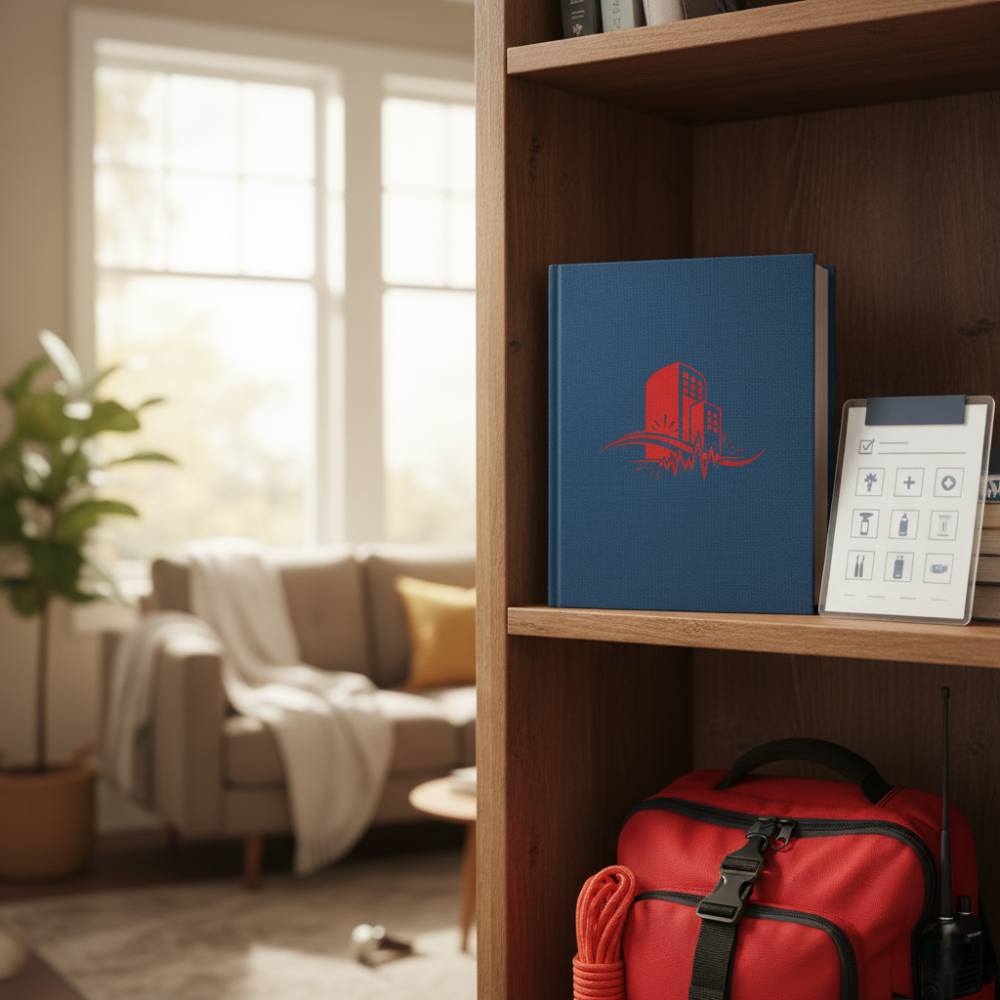

Deprem Öncesi Hazırlık Rehberi
Deprem öncesi hazırlık nasıl yapılır? Ev güvenliği, eşya sabitleme, aile planı ve deprem hazırlığı için kapsamlı rehber.
YENİ
Deprem Çantası Hazırlama Rehberi
Deprem çantası nasıl hazırlanır? İçinde neler olmalı? 2024 güncel deprem çantası listesi ve hayat kurtaran ipuçları.

Bina İçindeyseniz
Çök-Kapan-Tutun hareketini uygulayın. Pencerelerden uzak durun.

Dışarıdaysanız
Binalardan, ağaçlardan ve devrilebilecek cisimlerden uzak açık alanlara yönelin.

Araç Kullanırken
Güvenli bir şekilde kenara çekin, köprü ve tünellerden uzak durun.